전기철도기사 (2006-08-03 기출문제)
1과목: 전기철도공학
1. 전차선로에서 귀선전류의 대부분이 부급전선에 흐르는 것으로 생각한다면, 선로 임피던스는 몇 Ω/km인가? (단, 전차선의 자기임피던스는 50Ω/km, 부급 전선의 자기 임피던스 30Ω/km, 전차선과 부급 전선의 상호임피던스는 15Ω/km, 흡상변압기의 누설임피던스는 20Ω/km이다.)
- 15
- 30
- 50
- 70
(정답률: 알수없음)

2. 트롤리선의 잔존 단면적은 A[mm2]이며 안전율은 St, 트롤리선의 파괴강도를 δo[kgf/mm2]로 하면 트롤리선의 허용장력 T[kgf]를 나타내는 식은?
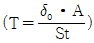
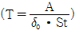
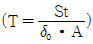
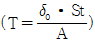
(정답률: 알수없음)
3. 전차선로에서 전압강하의 보상과 통신유도장해의 경감을 목적으로 말단에 단권변압기만 설치하고 개폐장치는 설치하지 않는 곳을 무엇이라 하는가?
- 급전구분소
- 변압기포스트
- 보조급전구분소
- 차단기포스트
(정답률: 알수없음)
4. 단상변압기 2대를 사용해서 3상 전원을 2상으로 변환하여 3상전원을 평형이 되도록 하는 결선방식은?
- 환상결산
- 스코트결선
- 대각결선
- 포그결선
(정답률: 알수없음)
5. 교류 전기철도에서 사용하는 장력조정장치의 종류가 아닌 것은?
- 스프링식
- 활차식
- 턴버클식
- 조가식
(정답률: 알수없음)
6. 직류 변전설비의 급전설비에 설치할 필요성이 없는 계전기는?
- 재폐로계전기(79F)
- 과전류계전기(76F)
- 고압지락계전기(64P)
- 부족전압계전기(80F)
(정답률: 알수없음)
7. 지상구간 커티너리 가선방식 전차선로에서 섬락보호지선의 접지설비는 몇 종 접지공사로 하는 것이 가장 적당한가?
- 제1종
- 제2종
- 제3종
- 특별 제3종
(정답률: 알수없음)
8. 전차선에 요구되는 성능과 거리가 먼 것은?
- 연성이 강해야 한다.
- 가선 장력에 대하여 충분히 견디어야 한다.
- 접속 개소의 동전 상태가 양호해야 한다.
- 집전장치 통과와 집전에 지장이 없어야 한다.
(정답률: 알수없음)
9. 변Y형 심플 커터너리 조가방식의 장점은?
- 경점이 경감된다.
- Y선의 장력조정이 쉽다.
- 지지점의 탄성점수가 크다.
- 가선의 압상량이 작다.
(정답률: 알수없음)
10. 커터너리 가선방식에서 경간이 50m이면 행거의 개수는 몇 개가 가장 적정한가?
- 8
- 9
- 10
- 11
(정답률: 알수없음)
11. 강체가선방식의 최대 이도 f를 구하는 식은? (단, ga+ge:특정 경간의 중량[N/m], a:경간[m], Ea:탄성계수[N/mm2], Iy-y:y-y축의 관성모멘트[cm4]이다.)
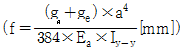
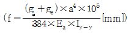
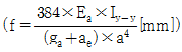
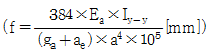
(정답률: 알수없음)
12. 전기철도 급전계통의 특성에 대한 설명으로 옳은 것은?
- 계통의 보호설비가 필요 없다.
- 부하의 크기 및 시간적 변동이 극히 심하다.
- 전력은 조가선으로만 공급한다.
- 비접지방식을 채택하고 있다.
(정답률: 알수없음)
13. 교류 강체 가선방식에서 컨덕터 레일구간의 온도변화에 의한 리지드바의 팽창을 상쇄시켜주는 장치는?
- 확장장치
- 직접유도장치
- 건널선장치
- 지상부이행장치
(정답률: 알수없음)
14. 도시철도 지하구간에 적합하도록 개발된 가선방식은?
- 가공식
- 강체식
- 제3궤조식
- 지하매설식
(정답률: 알수없음)
15. 전기차 집전장치인 팬터그래프에 대한 설명 중 틀린 것은?
- 추종특성을 좋게 하기 위하여 중량이 무거워야 한다.
- 전기적, 기계적 마모가 적어야 한다.
- 풍압의 영향에 따라 압상력의 영향이 적어야 한다.
- 고속용에는 공진방지용 댐퍼를 설치한다.
(정답률: 알수없음)
16. 교류와 직류의 직통운전에 대한 설명 중 잘못된 것은?
- 사구간 설비가 필요하다.
- 차량 제작비가 많이 든다.
- 승객에 대한 위험이 따른다.
- 환승하는 것 보다 편리하다.
(정답률: 알수없음)
17. 전기철도에서 전기차는 무엇으로 취급하는가?
- 전철변전설비
- 전철구분설비
- 전철급전설비
- 전철부하설비
(정답률: 알수없음)
18. 가공 전차선로의 구분장치에 대한 설명이 잘못된 것은?
- 가볍고 기계적 강도가 커야 한다.
- 신호기에 따라 구분장치 직하부분에 팬터그래프가 걸쳐져야 한다.
- 전차선의 급전계통상의 구분에 사용된다.
- 사고발생시 사고구간을 한정시키는 용도에 사용된다.
(정답률: 알수없음)
19. 가공전차선이나 보조 조가선의 횡진을 방지하기 위한 장치는?
- 곡선당김장치
- 진동방지장치
- 구분장치
- 장력조정장치
(정답률: 알수없음)
20. 전차선의 마모율과 관계가 가장 적은 것은?
- 전차선의 항장력
- 허용 잔존 지름
- 팬터그래프 통과 회수
- 급전선의 표준장력
(정답률: 알수없음)
2과목: 전기철도 구조물공학
21. 단독 지지주의 설계하중에 고려되어야 할 하중으로 전선중량에 대한 응력 계산은 주로 어떤 하중을 적용하는가?
- 수직분포하중
- 수직편심하중
- 수평분포하중
- 수평집중하중
(정답률: 알수없음)
22. 전철주 기초인 콘크리트 기초의 일종으로 성토 개소이거나 선로의 경사면의 토압이 약한 개소에 사용하여 침하와 전도가 되지 않도록 기초의 상부를 넓게 하는 기초는?
- 근가기초
- T형기초
- H형기초
- 쇄석기초
(정답률: 알수없음)
23. 작빔에 의한 하중을 계산할 때 가섭선 주위에 부착된 착방두께는 일반적으로 몇 mm를 적용하는가?
- 3
- 4
- 5
- 6
(정답률: 알수없음)
24. 그림과 같은 구조물은 몇 차 부정정인가?
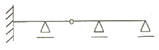
- 1차
- 2차
- 3차
- 5차
(정답률: 알수없음)
25. 전기철도 구조물의 강도 계산을 위한 조건이 아닌 것은?
- 지지주의 종류와 형태
- 사용 전선의 종류와 굵기
- 급전 손실률 및 이상전압 내습
- 전선에 가해지는 장력
(정답률: 알수없음)
26. 전철주와 조립하여 전차선과 급전선 등으 지지하기 위한 것으로서 고정식, 스팬선식, 가동식 등이 있는 강 구조물을 무엇이라 하는가?
- 빔
- 완금
- 완철
- 평행틀
(정답률: 알수없음)
27. 전차선로의 앵커볼트 기초에서 앵커볼트를 넣는 길이 ℓ[cm]를 나타내는 공식은? (단, M:땅의 경계에서의 전주의 굽힘모멘트[kgf·cm], μ:앵커볼트와 콘크리트의 허용 부착강도[kgf/cm2], d:볼트의 유효지름[cm], L:상대할 볼트의 간격[cm], n:인장측 소요 볼트 개수이다.)
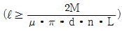
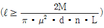
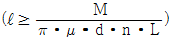
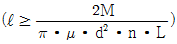
(정답률: 알수없음)
28. 전기철도의 지지물로 각 종 전철주를 비교하였을 때 철주에 대한 설명으로 틀린 것은?
- 소요 강도는 자유롭게 설계가 가능하다.
- 전주 길이에 제약이 없다.
- 강도에 비하여 경량이다.
- 초기 도금 후 방청도장이 불필요하다.
(정답률: 알수없음)
29. 그림과 같은 직사각형 단면의 도심을 지나는 X, Y축에 대한 단면상승 모멘트 값은?
- 0
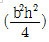
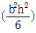
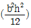
(정답률: 알수없음)
30. 다음 중 가공 전차선로에 주로 사용하는 애자가 아닌 것은?
- 현수애자
- 장간애자
- 지지애자
- 핀애자
(정답률: 알수없음)
31. 전차선로에 사용하는 지선 기초는 지지물 기초의 인상력에 대한 안전도를 고려하여 지선 기초의 안전율을 얼마 이상으로 적요하여 설계하여야 하는가?
- 1.5
- 2
- 2.5
- 3
(정답률: 알수없음)
32. 전차선로에 사용하는 조합철주의 경사재가 단경사재인 경우 수평면에 대한 경사 각도는 몇 도로 하는가?
- 35도
- 40도
- 45도
- 60도
(정답률: 알수없음)
33. 구조물의 분류 중 1차원 구조물이 아닌 것은?
- 아치(arch)
- 인장보(tension beam)
- 곡선보(curved beam)
- 쉘(shell)
(정답률: 알수없음)
34. 우리나라의 일반 전철구간에 전철주를 건식할 때 곡선반지름이 1000m이상인 경우의 표준경간은 몇 m로 하는가?
- 30
- 40
- 50
- 60
(정답률: 알수없음)
35. 그림의 0점 둘레의 힘의 모멘트는 몇 t·m인가?
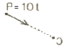
- 0
- 1
- 2
- 3
(정답률: 알수없음)
36. 가공 전차선로의 곡선로에서 수평장력 P[kgf]를 나타낸 식으로 옳은 것은? (단, S는 지지점 간격[m], T는 전선의 장력[kgf], R은 곡선반경 [m]이다.)
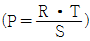
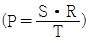
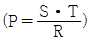
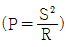
(정답률: 알수없음)
37. 안전율에 대한 설명 중 옳은 것은?
- 허용응력도를 말한다.
- 탄성한도를 변형율로 나눈 값이다.
- 극한강도와 허용응력의 비를 말한다.
- 파괴하중을 허용하중으로 나눈 값이다.
(정답률: 알수없음)
38. 전기철도 구조물의 강도를 계산할 때, 풍압하중, 눈하중, 곡선로의 횡장력 등이 포함되는 하중은?
- 수평하중
- 수직하중
- 특수하중
- 고정하중
(정답률: 알수없음)
39. 가공 전차선로에서 직선구간인 경우 전차선의 신장길이가 0.5m이고, 전차선의 선평창계수가 1.7×10-5, 표준온도에 대한 온도변화가 30이라면, 활차식 자동장력 조정장치의 조정거리는 약 몇 m인가?
- 950.4
- 960.4
- 970.4
- 980.4
(정답률: 알수없음)
40. 가공 전차선로 도면의 철근 콘크리트 전주에 11-30-N5000으로 표기되어 있다. 여기에서 11은 무엇을 나타내는가?
- 전주의 지름
- 전주의 설계 횡모멘트
- 전주의 압축력
- 전주의 길이
(정답률: 알수없음)
3과목: 전기자기학
41. 평형판콘덴서의 극간 전압을 일정하게 하고 극판사이에 극판 간격의 2/3두께의 유리판(εs=10)을 삽입할 때 극간의 흡인력은 공기가 극간에 있을 때에 비하여 어떻게 되는가?
- 2.5배 커진다.
- 1.5배 커진다.
- 0.6배로 작아진다.
- 0.8배로 작아진다.
(정답률: 알수없음)
42. 그림들은 전자의 자기모멘트의 크기와 배열상태를 그 차이에 따라 배열한 것이다. 강자성체에 속하는 것은?
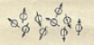
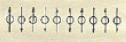
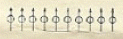
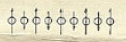
(정답률: 알수없음)
43. 자계의 세기 H[AT/m], 자속밀도 B[Wb/m2], 투자율 μ[H/m]인 곳의 자계의 에너지 밀도는 몇 J/m3인가?
- BH
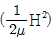
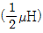
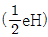
(정답률: 알수없음)
44. 와전류가 이용되고 있는 것은?
- 수중 음파 탐지기
- 레이더
- 자기브레이크(magnetic brake)
- 사이클로트론(cyclotron)
(정답률: 알수없음)
45. 유전류 ε1, ε2인 두 유전체 경계면에서 전계가 경계면에 수직일 때 경계면에 작용하는 힘은 몇 N/m2인가? (단, ε1 > ε2이다.)
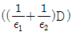
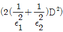
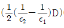
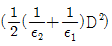
(정답률: 알수없음)
46. 공기 중에서 1m 간격을 가진 두 개의 평행 도체 전류의 단위길이에 작용하는 힘은 몇 N인가? (단, 전류는 1A라고 한다.)
- 2×10-7
- 4×10-7
- 2π×10-7
- 4π×10-7
(정답률: 알수없음)
47. 높은 주파수의 전자파가 전파될 때 일기가 좋은 날보다 비 오는 날 전자파의 감쇄가 심한 원인은?
- 도전률 관계임
- 유전률 관계임
- 투자율 관계임
- 분극률 관계임
(정답률: 알수없음)
48. 반지름 ε[m]의 구 도체에 전하 Q[C]이 주어질 때 구 도체표면에 작용하는 정전응력은 약 몇 N/m2인가?
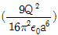
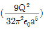
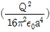
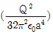
(정답률: 알수없음)
49. 변위전류 또는 변위전류밀도에 대한 설명 중 틀린 것은?
- 변위전류밀도는 전속밀도의 시간적 변화율이다.
- 자유공간에서 변위전류가 만드는 것은 자계이다.
- 변위전류는 주파수와 관계가 있다.
- 시간적으로 변화하지 않는 계에서도 변위전류는 흐른다.
(정답률: 알수없음)
50. 전기력선에 대한 다음 설명 중 옳은 것은?
- 전기력선은 양전하에서 시작하여 음전하에서 끝난다.
- 전기력선은 전위가 낮은 점에서 높은 점으로 향한다.
- 전기력선의 방향은 그 점의 전계의 방향과 반대이다.
- 전계가 0이 아닌 곳에서 2개의 전기력선은 항상 교차한다.
(정답률: 알수없음)
51. 다음의 전위함수에서 라플라스 방정식을 만족하지 않은 것은?
- V=rcosθ+ø
- V=x2-y2+z2
- V=pcosø+z
- V=V0/d·x
(정답률: 알수없음)
52. 어떤 종류의 결정(結晶)을 가열하면 한 면(面)에 정(正), 반대 면에 부(負)의 전기가 나타나 분극을 일으키며, 반대로 냉각하면 역(逆) 분극이 생긴다. 이 것을 무엇이라 하는가?
- 파이로(Pyro) 전기
- 볼타(Voita) 효과
- 바아크 하우센(Barkkhausen) 법칙
- 압전기(Piezo-electric)의 역효과
(정답률: 알수없음)
53. 평면도체 표면에서 진공내 d[m]의 거리에 짐전하 Q[C]이 있을 때, 이 전하를 무한 원까지 운반하는데 요하는 일은 몇 J인가?
- 9×109×Q2/d
- 4.5×109×Q2/d
- 3×109×Q2/d
- 2.25×109×Q2/d
(정답률: 알수없음)
54. 막대자석의 회전력을 나타내는 식으로 옳은 것은? (단, 막대자석의 자기모멘트 M[Wb·m]와 균등자계 H[A/m] 와의 이루는 각 θ는 0° < θ < 90° 라 한다.)
- M×H[N·m/rad]
- H×M[N·m/rad]
- μ0H×M[N·m/rad]
- M×μ0H[N·m/rad]
(정답률: 알수없음)
55. 그림과 같은 두 개의 통심구 도체가 있다. 구사이가 진공으로 되어 있을 때 동심구간의 정전용량은 몇 F인가?
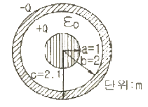
- 2πε0
- 4πε0
- 8πε0
- 12πε0
(정답률: 알수없음)
56. Maxell의 전자기파 방정식이 아닌 것은?
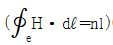
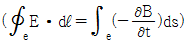
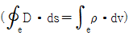
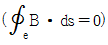
(정답률: 알수없음)
57. 단면적 4cm2의 철심에 6×10-4Wb의 자속을 통하게 하려면 2,800AT/m의 자계가 필요하다. 이 철심의 비투자율은 약 얼마인가?
- 346
- 375
- 407
- 427
(정답률: 알수없음)
58. 무한장의 직선 도체에 선전하 밀도 ρ[C/m]로 전하가 충전될 때 이 직선 도체에서 r[m]만큼 떨어진 점의 전위는?
- ρ이다.
- ρ·r이다.
- 0(Zero)이다.
- 무한대(∞)이다.
(정답률: 알수없음)
59. 100kW의 전력이 안테나로부터 사방으로 균일하게 방사되어 나갈 때 안테나로부터 10km 떨어진 점에서의 전계의 세기를 실효값으로 나타내면 약 몇 V/m인가?
- 0.087
- 0.173
- 0.346
- 0.519
(정답률: 알수없음)
60. 정현파 자속의 주파수를 2배로 높이면 유기 기전력은 어떻게 되는가?
- 변하지 않는다.
- 2배로 증가한다.
- 4배로 증가한다.
- 1/2이 된다.
(정답률: 알수없음)
4과목: 전력공학
61. 설비용량 600kW, 부동률 1.2, 수용률 60%일 때의 합성 최대 수용전력은 몇 kW인가?
- 240
- 300
- 432
- 833
(정답률: 알수없음)
62. 망상(Network)배전방식에 대한 설명으로 옳은 것은?
- 부하 증가에 대한 융통성이 적다.
- 전압 변동이 대체로 크다.
- 인축에 대한 감전사고가 적어서 농촌에 적합하다.
- 환상식보다 무정전 공급의 신뢰도가 더 높다.
(정답률: 알수없음)
63. 송전선로에서 가공지선을 설치하는 목적이 아닌 것은?
- 뇌(雷)의 직격을 받을 경우 송전선 보호
- 유도에 의한 송전선의 고저위 방지
- 통신선에 대한 차폐효과 증진
- 철탑의 접지저항 경감
(정답률: 알수없음)
64. 배전계통에서 전력용콘덴서를 설치하는 목적으로 다음 중 가장 타당한 것은?
- 전력손실 감소
- 개폐기의 타단 증력 증대
- 고장시 영상전류 감소
- 변압기 손실 감소
(정답률: 알수없음)
65. 3상 3선식 가공 송전선로의 선간거리가 각각 D12, D23, D31일 때 등가선간거리는 어떻게 표현되는가?
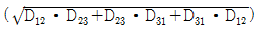
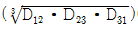
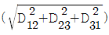
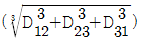
(정답률: 알수없음)
66. 선로의 길이가 50km인 66kV 3상 3선식 1회선 송전선의 1선당 대지정전용량은 0.0⑤8㎌/km이다. 여기에 시설할 소호리액터의 용량은 약 몇 kVA인가? (단, 소호리액터의 용량은 10%의 여유를 주도록 한다.)
- 386
- 435
- 524
- 712
(정답률: 알수없음)
67. 3상용 차단기의 용량은 그 차단기의 정격전압과 정격차단전류와의 곱을 몇 배한 것인가?
- 1/√2
- 1/√3
- √2
- √3
(정답률: 알수없음)
68. 그림과 같은 전력계통에서 A점에 설치된 차단기의 단락용량은 몇 MVA인가? (단, 각 기기의 % 리액턴스는 발전기 G1, G2는 정격용량 15MVA기준 각각 15%이고, 변압기는 정격요량 20MVA 기준 8%, 송전선은 정격용량 10MVA 기준 11%이며, 기타 다른 정수는 무시한다.)
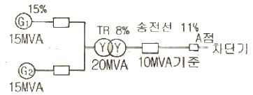
- 20
- 30
- 40
- 50
(정답률: 알수없음)
69. 선로의 단위 길이당의 분포 인덕턴스를 L, 저항을 r, 정전용량을 C, 누설 콘덕턴스를 각각 g라 할 때 전파정수는 어떻게 표현되는가?
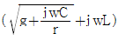
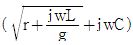
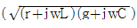
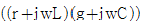
(정답률: 알수없음)
70. 송전선로에서 단선 고장시 이상 전압이 가장 큰 접지 방식은?
- 비접지방식
- 직접접지방식
- 저항접지방식
- 소호리액터접지방식
(정답률: 알수없음)
71. 가압수형 동력용 원자로에 대한 설명으로 옳은 것은?
- 냉각재인 경수는 가압되지 않은 상태이므로 끓여서 높은 온도까지 올려야 한다.
- 노심에서 발생한 열은 가압된 경수에 의하여 열교환기에 운반된다.
- 노심은 약 100kg/cm2정도의 압력에 견딜수 있는 압력용기 안에 들어 있다.
- 가압수형 원자로는 BWR이라고 한다.
(정답률: 알수없음)
72. 한 대의 주상변압기에 역률(뒤짐) cosθ1, 유효전력 P1[kW]의 부하와 역률(뒤짐) cosθ2, 유효전력 P2[kW]의 부하가 병렬로 접속되어 있을 때 주상변압기 2차측에서 본 부하의 종합 역률은 어떻게 되는가?
(정답률: 알수없음)
73. 쿨평형 3상 전압을 Va, Vb, Vc라 하고 라 할 때 이다. 여기에서 Vx는 어떤 전압을 나타내는가?
- 정상정압
- 단락전압
- 영상전압
- 지락전압
(정답률: 알수없음)
74. 전력계통의 안정도 향상대책으로 직렬 리액턴스를 작게 하기 위한 방법이 아닌 것은?
- 발전기의 리액턴스를 작게 한다.
- 변압기의 리액턴스를 작게 한다.
- 복도체를 사용한다.
- 계통을 연계한다.
(정답률: 알수없음)
75. 변압기의 내부 고장시 동작하는 것으로서 단락고장의 검출등에 사용되는 계전기는?
- 부족전압계전기
- 비율차동계전기
- 재폐로계전기
- 선댁계전기
(정답률: 알수없음)
76. 다음 중 켈빈(Kelvin)의 법칙이 적용되는 경우는?
- 전력 손실량을 축소시키고자 하는 경우
- 전압 강하를 감소시키고자 하는 경우
- 부하 배분의 균형을 얻고자 하는 경우
- 경제적인 전선의 굵기를 선정하고자 하는 경우
(정답률: 알수없음)
77. 화력발전소에서 재열기의 목적은?
- 공기를 가열한다.
- 급수를 가열한다.
- 증기를 가열한다.
- 석탄을 건조한다.
(정답률: 알수없음)
78. MHD 발전에 대한 설명으로 옳은 것은?
- 수차 직결 유도발전기에 의한 발전방식이다.
- 2종의 도체의 접정간에 온도차가 생겼을 때 기전력이 발생되는 발전방식이다.
- 얼음극으로부터 열전자 방출에 의한 발전방식이다.
- 도전성 유체와 자장의 상호작용에 의한 직접발전방식이다.
(정답률: 알수없음)
79. 배전반에 접속되어 운전 중인 PT와 CT를 점검할 때의 조치사항으로 옳은 것은?
- CT는 단락시킨다.
- PT는 단락시킨다.
- CT와 PT 모두를 단락시킨다.
- CT와 PT 모두를 개방시킨다.
(정답률: 알수없음)
80. 송배전선로에서 전선의 장력을 2배로 하고 또 경간을 2배로 하면 전선의 이도는 처음의 몇 배가 되는가?
- 1/4
- 1/2
- 2
- 4
(정답률: 알수없음)